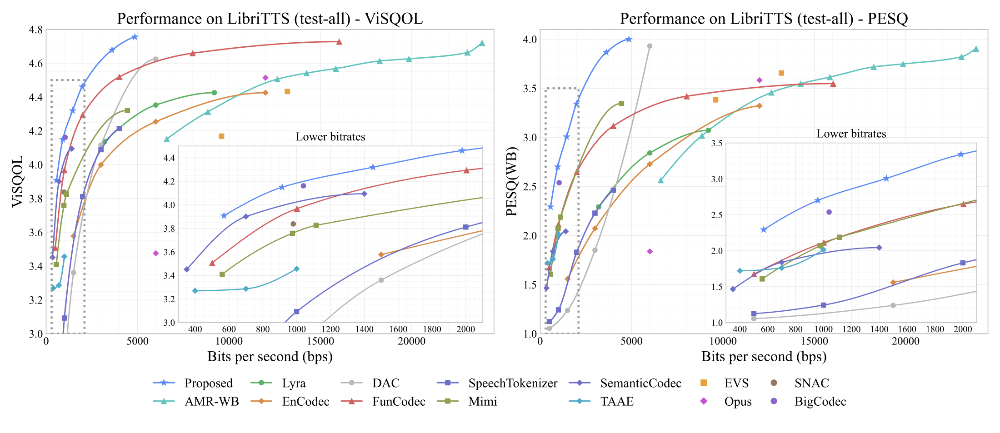
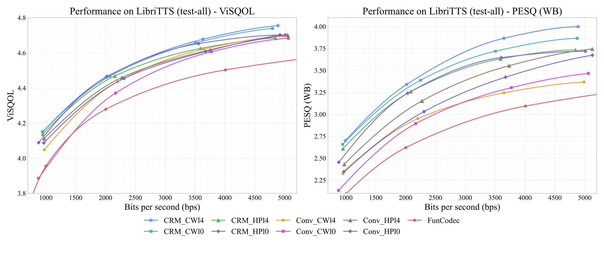

Abstract
Learning-based speech compression has achieved strong low-bitrate performance, but many neural speech codecs still rely on fixed-length quantized indices or post-hoc entropy coding of already generated token streams, which cannot fully exploit the non-uniform and correlated structure of learned speech latents. In this paper, we study learning-based speech compression from both a benchmark and an entropy-constrained representation learning perspective. We first formulate the compression problem and summarize recent progress in terms of transform domains, backbone architectures, quantization and entropy coding strategies, and training objectives. We then propose an entropy-constrained neural speech codec that combines scalar quantization with a learned entropy model, including a hyperprior, channel-wise context modeling, latent residual prediction, and lightweight temporal modeling. To further improve low-bitrate coding, we introduce entropy skip, which deterministically suppresses highly predictable residual symbols using decoder-available scale estimates. Experiments on LibriTTS show that the proposed codec achieves strong objective and subjective performance in the low-bitrate regime. Compared with FunCodec, it improves BD-ViSQOL by 0.216 and BD-PESQ by 0.703, corresponding to bitrate reductions of 43.90% and 62.78% at matched quality, respectively. Detailed ablations and diagnostic analyses further validate the roles of transform-entropy co-design, post-hoc entropy coding comparison, and entropy skip.
Keywords: Speech Compression, Neural Speech Codec, Entropy Model, Linear Attention
Overview

Figures





Audio Samples
Sample files are loaded from the local audio/ folder.